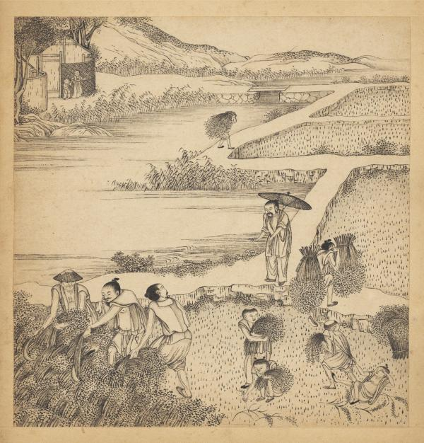

中国第一部系统总结南方水田农业的专著，对水稻栽培、土壤改良、水利灌溉等技术进行了开创性论述，标志着农学重心从北方旱作转向南方水田。

南宋绍兴年间，随着宋室南渡，江南地区成为全国经济中心。但当时北方传统农书无法适应南方水田耕作需求，农业生产亟需适合本地特点的技术指导。这一时期，江南人口激增、耕地紧张，提高单位产量成为迫切需求。
陈旉广泛吸收民间智慧，对土壤改良、肥料施用、水稻栽培等关键技术进行系统总结。特别是对南方特有的烤田、育秧等技术，进行了开创性的理论提升，标志着中国农学重心从北方旱作转向南方水田农业。
《陈旉农书》详细论述了水稻栽培的全过程，包括选种、育秧、插秧、田间管理等环节。特别对南方特有的育秧技术和烤田技术进行了系统总结，提出"秧田欲平，秧苗欲齐"的要求。
陈旉强调精耕细作是提高水稻产量的关键。他提出"深耕以利根，浅灌以润苗"的原则，要求根据水稻不同生长阶段调整耕作深度和灌水深度，确保水稻生长的最佳条件。
书中详细介绍了南方水田的水利灌溉技术，包括开沟引水、筑堤蓄水等方法。陈旉强调"水润为上"，要求根据水稻生长需水规律进行合理灌溉，重视烤田和湿润灌溉的结合。
陈旉对南方水田土壤特性有深入研究，提出了一系列土壤改良方法。他主张通过增施有机肥、合理轮作等方式改善土壤结构，提高土壤肥力，强调"地力常新"的理念。
书中系统总结了南方水田的施肥技术，包括基肥、追肥的施用方法。陈旉提出"用肥如用药"，强调根据土壤肥力和作物需求进行科学施肥，反对盲目施肥。
陈旉在书中记载了多种水稻病虫害的防治方法，包括选用抗病品种、合理密植、清除杂草等综合防治措施。他强调"治未病"的预防思想，体现了朴素的生态防治理念。